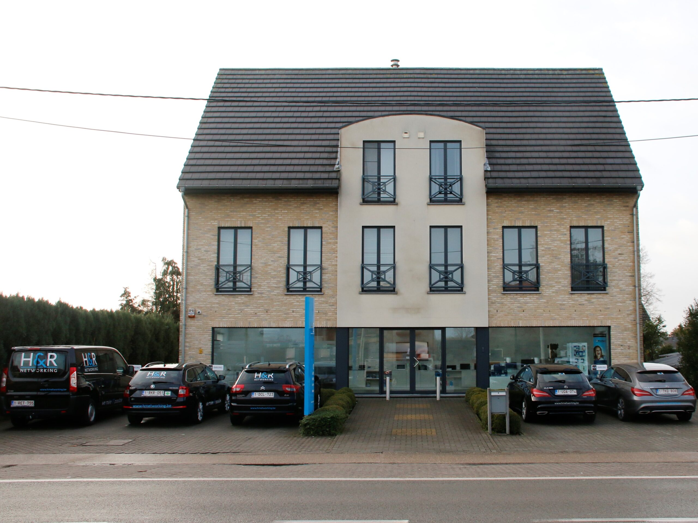

H&R Networking
Dit is een IT-bedrijf dat zorgt voor de IT die in jouw bedrijf nodig is om het te laten runnen. Zij doen dit tegenover een betaalbare prijs voor iedere KMO. Ze hebben immers al referenties met bedrijven zoals DCA, Hermans Heftrucks, De Lilse Bergen. Dit is een IT-bedrijf dat zorgt voor de IT die in jouw bedrijf nodig is om het te laten runnen. Zij doen dit tegenover een betaalbare prijs voor iedere KMO. Ze hebben immers al referenties met bedrijven zoals DCA, Hermans Heftrucks, De Lilse Bergen. Dit is een IT-bedrijf dat zorgt voor de IT die in jouw bedrijf nodig is om het te laten runnen. Zij doen dit tegenover een betaalbare prijs voor iedere KMO. Ze hebben immers al referenties met bedrijven zoals DCA, Hermans Heftrucks, De Lilse Bergen.
